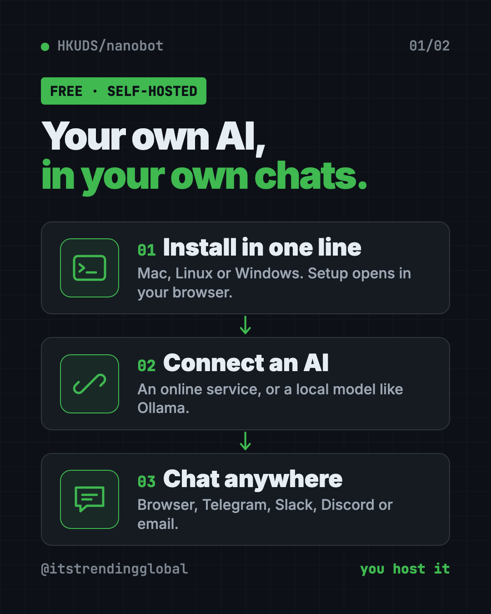
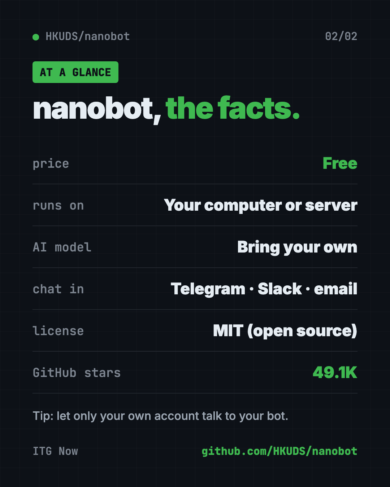

nanobot: Free Self-Hosted AI Assistant You Own (2026)
nanobot is a free self-hosted AI assistant. Run it on your own computer, then chat in your browser, Telegram, Slack, Discord or email. Here's how.
nanobot is a free self-hosted ai assistant that runs on your own computer or server. You chat with it in a browser, a terminal, or apps like Telegram, Slack, Discord and email.
It can read your files, remember your preferences and run jobs on a schedule. This guide covers what it does, who it's for, and how to install it with one command.
Key takeaways
- You host it. It runs on your machine, so you decide where it lives and what it can touch.
- Chat where you already are. Browser, terminal, Telegram, Discord, Slack, WeChat, email, Teams and more.
- Bring your own AI. Connect an online AI service, or a local model through Ollama.
- Free and open source. MIT license, about 49.1K GitHub stars.
- One-line install on Mac, Linux and Windows.
What is nanobot?
Most AI assistants live inside someone else's app. You chat on their site, your history sits on their servers, and it only works where they say.
nanobot flips that. It's a small AI "agent," which means an AI that can take actions, not just chat. And it's self-hosted, so it runs on a computer you control.
The README calls it "ultra-lightweight." The core is kept small and readable, so tinkerers can open it up and change things.
It doesn't come with an AI brain. You connect one. That can be a paid online service, or a free model running on your own computer.
What can a self-hosted AI assistant like nanobot do?
From the README, nanobot can:
- Chat anywhere. A browser page, a terminal, or chat apps like Telegram, Discord, Slack, WeChat, email, Mattermost, Linear, Feishu and Teams.
- Read office files. PDF, Word, Excel and PowerPoint, for jobs like summing up a report.
- Remember you. It keeps chat history and long-term memory through a feature called Dream.
- Run on a schedule. Set automations that start at set times.
- Chase a goal. Type
/goaland it keeps working over several steps until done. - Use tools. Web search, image generation and MCP plug-ins (add-ons that connect it to other apps).

How to use nanobot (real examples)
- Summarize a report. Put a file in a practice folder and ask, "Read notes.txt and write a short summary to summary.md." This is the README's own first test.
- Get a daily briefing in Telegram. Connect Telegram, then set an automation to send you a morning summary.
- Teach it your style. Say, "For release notes, use concise bullet points." It can save that preference for next time.
- Give your team a shared helper. Add it to Slack or Discord so everyone can ask it questions.
- Let it work on a goal. Try
/goal Review this project's tests and list the smallest missing test case.Use/stopto interrupt it.
💡 Tip: When you first try file tasks, pick a practice folder and the Restricted access option. That keeps nanobot away from everything else.
Who is nanobot for?
- Busy people who want an assistant inside Telegram, Slack or email.
- Small business owners who want help with reports and routine tasks.
- Teams that want a shared bot in Slack, Discord or Teams.
- Privacy-minded people who want to host their own assistant.
- Tinkerers who want a small AI agent they can read and change.
There's even a guide in the repo called "Start Without Technical Background," for people new to terminals.
Is nanobot free?
Yes. nanobot is free and open source under the MIT license.
The AI model is your choice and your cost. The README is clear: "nanobot does not supply a model account." A paid AI service bills you for use. A local model through Ollama costs nothing per message, but needs a strong enough computer.
How to install nanobot
You need Python 3.11 or newer. The installer sets up the rest and opens the setup page for you.
On Mac or Linux, open Terminal. Copy and paste this:
curl -fsSL https://raw.githubusercontent.com/HKUDS/nanobot/main/scripts/install.sh | sh
On Windows, open PowerShell. Copy and paste this:
irm https://raw.githubusercontent.com/HKUDS/nanobot/main/scripts/install.ps1 | iex
⚠️ Heads up: These commands download and run a script from the internet. The README links to both scripts so you can read them first, and offers a
--dry-runoption to preview what they'll do.
If the browser page doesn't open by itself, copy and paste this:
nanobot webui
Keep that terminal window open while you use it. Then follow the README's first three steps:
- Open Settings, then Models, and save your AI provider and model.
- Start a new topic and send
Hello!to check it works. - Try a file task in a practice folder with Restricted access.
Already use uv (a Python app installer)? Copy and paste this instead:
uv tool install nanobot-ai
To keep nanobot running after you close the window, copy and paste this:
nanobot gateway --background

Let Claude or Codex set it up for you
Claude Code and OpenAI Codex are AI helpers that can run setup steps on your computer. You paste a request, they do the work, and you approve each step.
Copy and paste this:
Please help me install nanobot from github.com/HKUDS/nanobot.
1. Check I have Python 3.11 or newer.
2. Show me the official install script for my system, explain what it does, then run it.
3. Open the nanobot WebUI and walk me through Settings > Models.
4. Help me pick an AI provider. Tell me if a local model with Ollama would run on my computer.
5. Send "Hello!" to test it.
Then try asking:
Connect my nanobot to Telegram and allow only my own account to talk to it.
Set up a nanobot automation that sends me a short summary every weekday at 8 am.
Keep nanobot running in the background and show me how to check its status.
Is a self-hosted AI assistant private?
More private than most, with one big catch. nanobot runs on your computer, and your chats and memory are saved there.
But your messages still go to whatever AI you connect. If that's an online service, they see what you send. For the most privacy, use a local model through Ollama.
⚠️ Heads up: When you connect a chat app like Telegram, limit who can talk to your bot. Otherwise strangers who find it could use your AI credits. The README's own example prompt asks to "allow only my account."
nanobot at a glance
| Price | Free (your AI model may cost money) |
| Works offline | Yes, with a local model like Ollama |
| Platforms | Mac, Windows, Linux |
| License | MIT |
| Chat apps | Telegram, Discord, Slack, WeChat, email, Teams and more |
| GitHub stars | About 49.1K |
| Best for | People who want their own assistant in the apps they already use |
Our take
nanobot is a friendly way to own your AI assistant. One line installs it, a browser page sets it up, and it shows up in the chat apps you already use.
What we like:
- Small and readable, not a giant platform.
- Works in lots of chat apps.
- Your choice of AI, including free local models.
- A clear guide for people with no tech background.
- Scheduled jobs and long goals built in.
What to watch for:
- You manage it yourself. If your computer sleeps, your bot sleeps, unless you host it on a server.
- Your AI provider still sees your messages unless you run a local model.
- Lock down chat app access so strangers can't use it.
- Missed scheduled jobs aren't replayed after a restart, the README says.
Want a bigger personal AI agent? Compare it with OpenClaw and Hermes Agent. From the same lab, try DeepTutor, a free AI tutor.
FAQ
What is nanobot?
nanobot is a small, free, self-hosted AI assistant. It runs on your computer and talks to you in a browser, terminal or chat apps like Telegram and Slack.
Is nanobot free?
Yes. It's free and open source under the MIT license. The AI model you connect may cost money, unless you run a local one.
Can nanobot run with a local model?
Yes. The README links guides for Ollama, vLLM and other local model servers, so you can run it without an online AI service.
Does nanobot work with Telegram and Slack?
Yes. It connects to Telegram, Discord, Slack, WeChat, email, Mattermost, Linear, Teams and more.
Do I need to be technical to use nanobot?
Not very. A one-line installer opens a browser setup page, and the repo has a guide for people with no terminal experience.
Who made nanobot?
HKUDS, the research group behind DeepTutor. It's shared on GitHub as HKUDS/nanobot.
Get nanobot: github.com/HKUDS/nanobot
Follow @gittrendingglobal on Instagram for one free, useful tool every day.
📲 Watch it on Instagram in under a minute
Keep reading

DBX: Free Database Client for 100+ Databases, With AI (2026)
DBX is a free database client that opens 100+ kinds of databases in a 25 MB app. Its AI helper turns plain English into database queries for you.

PureMac: Free CleanMyMac Alternative, No Subscription
PureMac is a free CleanMyMac alternative. It clears junk, fully uninstalls apps and finds duplicates, with no subscription, no tracking and no scare tactics.

Strata: Run Big Local AI on a Gaming PC, Free
Strata is a free installer that runs big, private local AI on a gaming PC. It sets up a large Qwen model, so your chats never leave your computer.